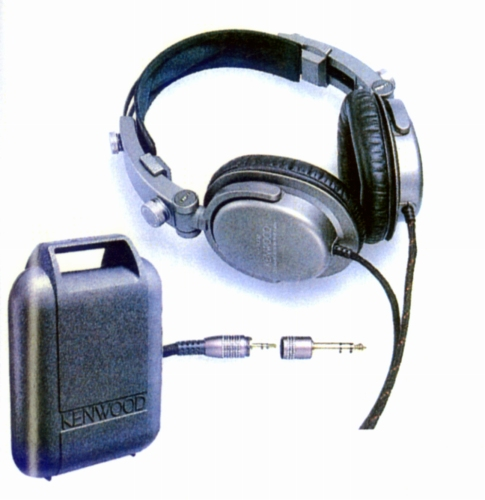
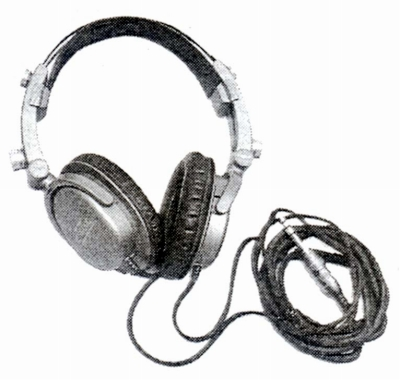

KH-7000


■価格 20,000円■型式 ダイナミック型密閉式■振動板 46�oプラズマダイヤモンドコートポリエステル■インピーダンス 50Ω■再生周波数帯域 10-25,000Hz■許容入力 500mW■感度 101dB/mW■コード 3mPCOCC ステレオミニプラグ■重量 250g（コード含まず）■発売 1989年9月■販売終了■備考 ミニ→標準変換プラグ付き ボックス付属
ケンウッドのインデックスへ